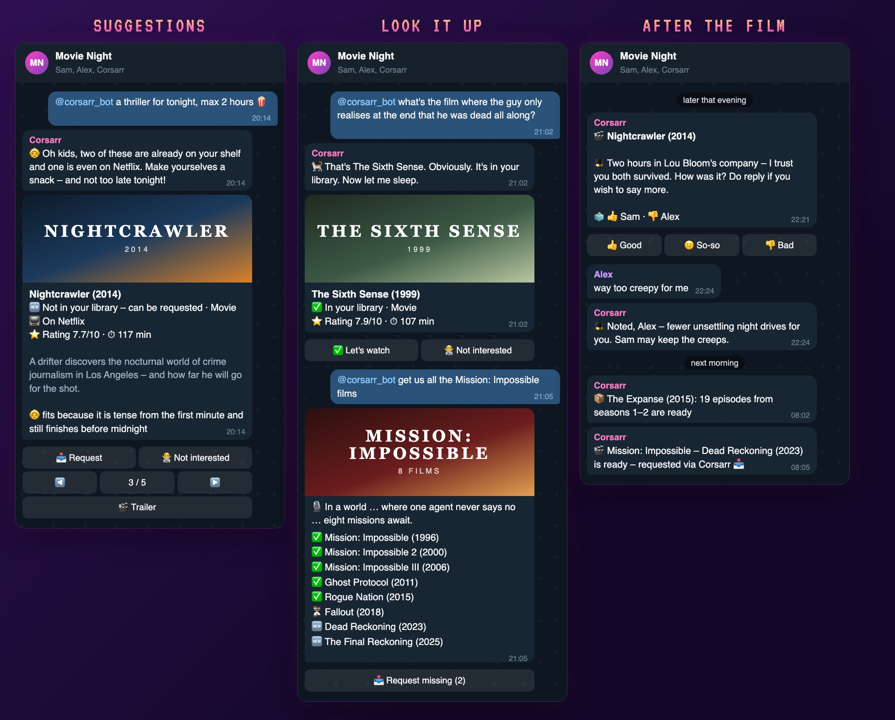
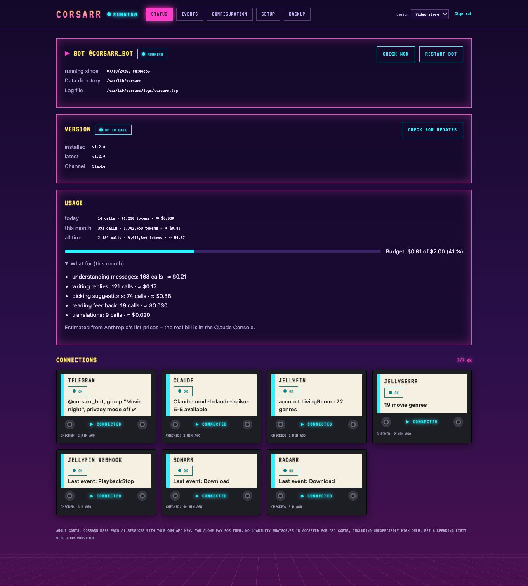
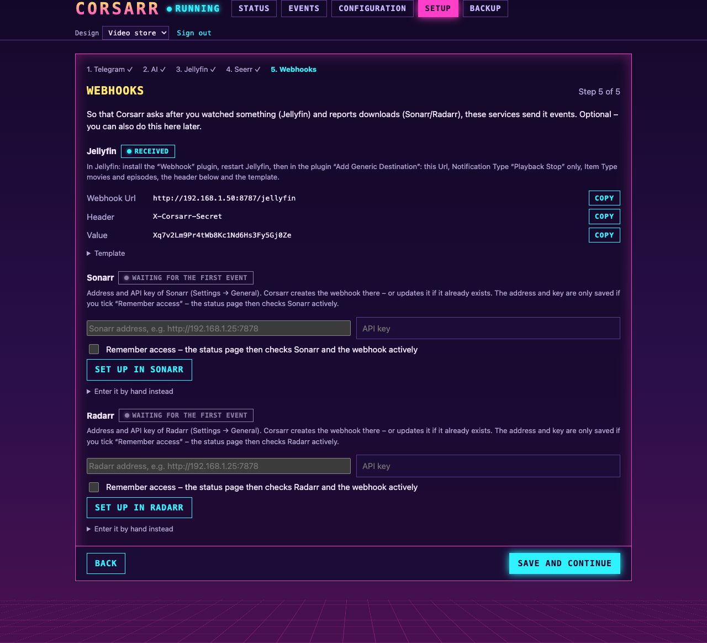
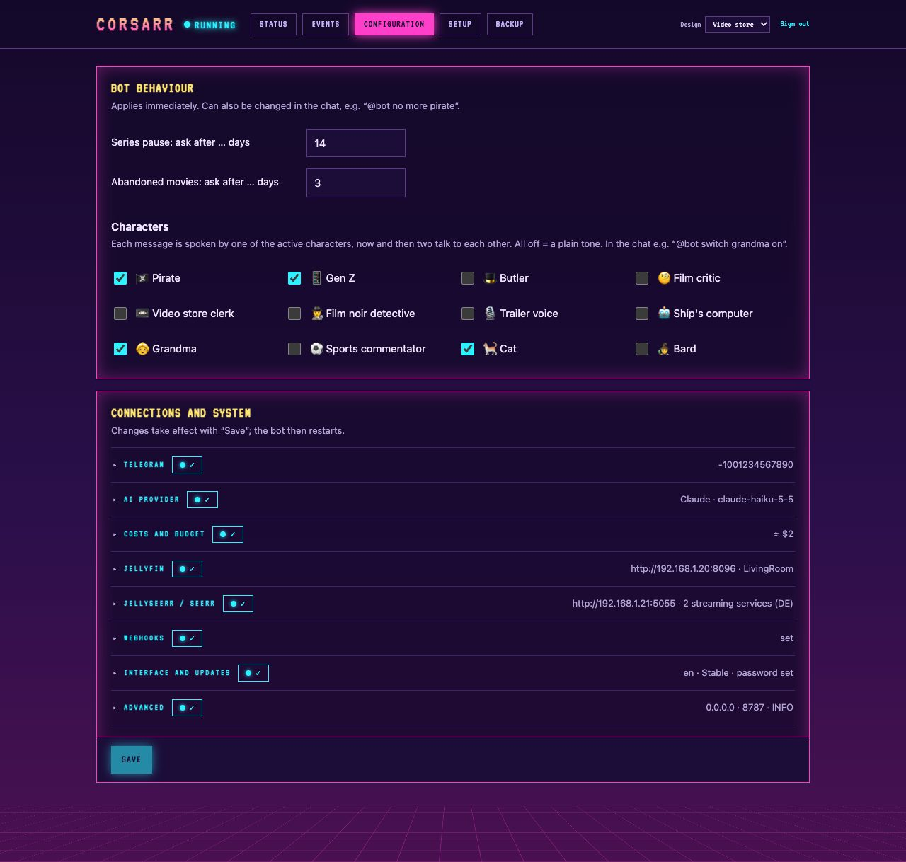
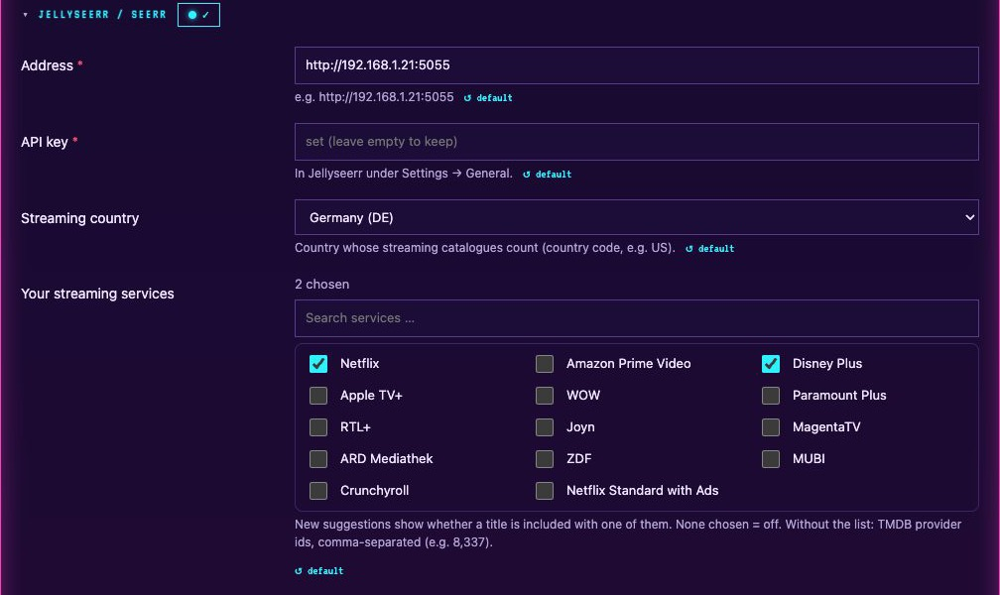

CORSARR
Your movie night crew on Telegram. Picks films and series from your Jellyfin library and beyond, asks how you liked them, learns your taste – and tells you when Sonarr and Radarr are done.



WHAT IT DOES
Suggestions that fit
@bot find us a thriller, max 2 hours → one browsable card: your library first, then new titles, each with poster, reason and trailer.
Look it up
By name or by plot – "the film where the guy was dead all along?" – and whole film series with one button.
Where to stream it
Cards for new titles name the streaming services you subscribe to – watch there or request it.
Learns your taste
Asks after the film; each of you rates for yourself, and suggestions respect both tastes.
Downloads without spam
Sonarr and Radarr imports bundled – a whole season is one message, missed webhooks are caught up.
Personality
Twelve characters from pirate to grandma and cat – and it answers in whatever language you write in.
Web interface
Setup assistant, status checks, usage and cost with a monthly budget, backups, update channels, four designs.
Yours
Self-hosted, open source (GPL-3.0), no telemetry. Facts come from your servers – the model only picks and phrases.
THE WEB INTERFACE








GET STARTED
Proxmox (recommended)
In the Proxmox host shell – creates a small Debian container and installs Corsarr:
bash -c "$(curl -fsSL https://raw.githubusercontent.com/ironiro/corsarr/main/deploy/proxmox.sh)"
Docker
Images for amd64 and arm64 on ghcr.io/ironiro/corsarr:
curl -fsSLO https://raw.githubusercontent.com/ironiro/corsarr/main/docker-compose.yml docker compose up -d
Then open http://<ip>:8787/ – the setup assistant walks you
through Telegram, Claude, Jellyfin, Jellyseerr/Seerr and the webhooks.
More ways to install →